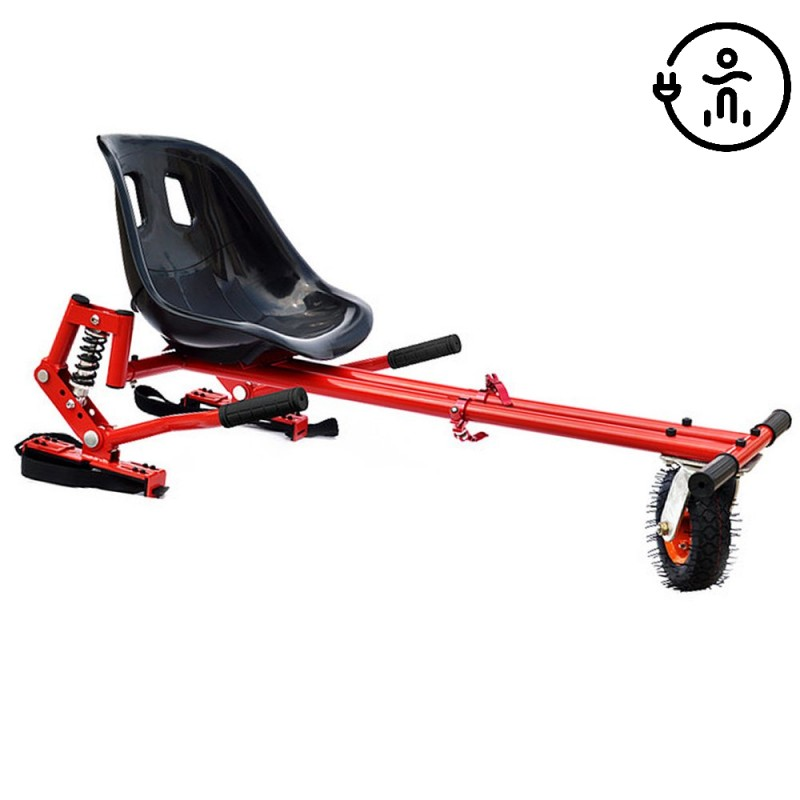

Kartingai, pasivažinėjimas kartingais | Gera dovana
 Siekiant užtikrinti sklandų svetainės veikimą, analizuoti lankytojų veiklą ir teikti individualizuotus skelbimus, šioje svetainėje yra naudojami slapukai ir socialinių tinklų įskiepiai. Slapukų ir įskiepių naudojimą galite pasirinkti patys nustatymuose. Daugiau informacijos Privatumo politikoje . Slapukų nustatymai Supratau Nuolaidos gavėjas Dovanos moterims Dovanos vyrams Dovanos dviem Dovanos vaikams Dovanos šeimai Dovanos grupėms Dovanos senjorams Dovanos nėštukėms Gerumo dovanos
Visų gavėjų sąrašas
patirtis Oro pramogos Spa ir masažai Poilsis Lietuvoje Žemės pramogos Vandens pramogos Poilsis užsienyje Kūrybiškos, linksmos Superautomobiliai Restoranai ir degustacijos Grožis TOP aktyvus laisvalaikis SveikatinimasVisų patirčių sąrašas
vieta Vilnius Kaunas Klaipėda Š iauliai Panevėžys Birštonas Druskininkai Trakai Palanga Nida Anykščiai Alytus Marijampolė Telšiai Tauragė Utena Molėtai UžsienisVisų miestų sąrašas
proga Gimtadienis Vestuvių metinės Vestuvės Sužadėtuvės Mergvakaris Bernvakaris Krikštynos Dovanų idėjos Kalėdinės dovanosVisų progų sąrašas
Daugiau dovanų idėjų PC čekiai Dovanos su apribojimais Prabangios dovanos Naujausios dovanos Parduotuvių dovanų čekiai Dovanų rinkiniai Verslo dovanos Leidinių prenumeratosVisų dovanų sąrašas
Parduotuvės Informacija Kontaktai Prisijungti Patinka Turite dovanų čekį? 🍁 Jaukus rudens poilsis su nakvyne 🍁 rinktis Meniu Paieška Krepšelis Parduotuvės Turite dovanų čekį? Informacija D.U.K Pristatymas Pirkimo taisyklės Privatumo politika Kontaktai Parduotuvės Tapkite partneriu Kontaktai Prekių krepšelis Jūsų krepšelis tuščias Išsirinkę prekes, spauskite mygtuką Dėti į krepšelį Patinka gavėjas Dovanos moterims Mamai Draugei Merginai daugiau Dovanos vyrams Vaikinui Sutuoktiniui Draugui daugiau Dovanos dviem Porai Tėvams Dovanos vaikams Dovanos šeimai Dovanos grupėms Dovanos senjorams Dovanos nėštukėms Gerumo dovanos Maltiečiai (Maltos ordinas) R. Kaukėno paramos fondas Caritas Dovanos su apribojimais Prabangios dovanos Naujausios dovanos Parduotuvių dovanų čekiai Dovanų rinkiniai Verslo dovanos Leidinių prenumeratos Visos dovanos patirtis Oro pramogos Skrydis oro balionu Š uolis parašiutu Skrydis parasparniu daugiau Spa ir masažai Viso kūno masažai Masažai vyrams Spa ir masažai dviem daugiau Poilsis Lietuvoje Poilsis Palangoje Poilsis Druskininkuose Poilsis Birštone daugiau Žemės pramogos Š audymas Auto/moto Jodinėjimas daugiau Vandens pramogos Vandens parkai Plaukimas laivu ir jachta Nardymas daugiau Poilsis užsienyje Poilsis Latvijoje Poilsis Estijoje Poilsis Lenkijoje daugiau Kūrybiškos, linksmos Galvosūkių kambariai Fotosesijos Kinas daugiau Superautomobiliai Lamborghini Ferrari TESLA daugiau Restoranai ir degustacijos Degustacijos Vakarienės Pasaulio virtuvės daugiau Grožis Manikiūras, pedikiūras Veido procedūros Plaukų procedūros daugiau TOP aktyvus laisvalaikis Sveikatinimas Poilsis sanatorijoje Sveikatinimo procedūros Sporto užsiėmimai Dovanos su apribojimais Prabangios dovanos Naujausios dovanos Parduotuvių dovanų čekiai Dovanų rinkiniai Verslo dovanos Leidinių prenumeratos Visos dovanos vieta Vilnius Kaunas Klaipėda Š iauliai Panevėžys Birštonas Druskininkai Trakai Palanga Nida Anykščiai Alytus Marijampolė Telšiai Tauragė Utena Molėtai Užsienis Dovanos su apribojimais Prabangios dovanos Naujausios dovanos Parduotuvių dovanų čekiai Dovanų rinkiniai Verslo dovanos Leidinių prenumeratos Visos dovanos proga Gimtadienis Vestuvių metinės Vestuvės Sužadėtuvės Mergvakaris Bernvakaris Krikštynos Dovanų idėjos Kalėdinės dovanos Kalėdinės dovanos vyrams Kalėdinės dovanos moterims Kalėdinės dovanos šeimai daugiau Dovanos su apribojimais Prabangios dovanos Naujausios dovanos Parduotuvių dovanų čekiai Dovanų rinkiniai Verslo dovanos Leidinių prenumeratos Visos dovanos PC čekiai Nuolaidos Dovana per 1 minutę NEMOKAMAS keitimas ir pristatymas 4000+ atsiliepimų Atgal / Pradžia Žemės pramogos KartingaiKartingai (24)
Š audymas Jodinėjimas Auto/moto Kartingai Pramogų parkai Boulingas Driftas Golfas Motociklai Keturračiai Bagiai Žygiai Š ratasvydis Dažasvydis Filtrai kaina € € vieta Vilnius 18 Kaunas 8 Klaipėda 6 Panevėžys 5 Š iauliai 6 Druskininkai 5 Birštonas 2 Anykščiai 5 Trakai 8 Palanga 5 Nida 2 Užsienis 2 Alytus 6 Marijampolė 4 Telšiai 3 Tauragė 2 Utena 4 Molėtai 2 gavėjas Dovanos vyrams 22 Dovanos moterims 19 Dovanos dviem 8 Dovanos vaikams 14 Dovanos šeimai 2 Dovanos nėštukėms 2 Dovanos senjorams 2 Dovanos grupėms 2 proga Gimtadienis 24 Dovanų idėjos 15 Mergvakaris 9 Bernvakaris 10 Vestuvės 2 Vestuvių metinės 2 Mokyklos, universiteto baigimas 11 Sužadėtuvės 2 Krikštynos 3 Tipas TOP 8 Tik pas mus 9 asmenų skaičius 1 asm. 22 2 asm. 11 3+ asm. 4 Neribojama 2 trukmė iki 0,5 val. 13 pagal teikėją E Power Arena 2 ElektroKart by Kartlandas 2 Gecko Motorsport 3 GERA DOVANA 5 Kartai 1 Kartlandas 5 Pajūrio kartingai 3 Plytinės kartodromas 2 Speedway 1 Filtrai kaina Nuo € - iki € Eiliškumas Grįžti Eiliškumas Perkamiausios viršuje Pigiausios viršuje Brangiausios viršuje Didžiausia nuolaida viršuje vieta Grįžti vieta Vilnius Kaunas Klaipėda Panevėžys Š iauliai Druskininkai Birštonas Anykščiai Trakai Palanga Nida Užsienis Alytus Marijampolė Telšiai Tauragė Utena Molėtai gavėjas Grįžti gavėjas Dovanos vyrams Visi Draugui Vaikinui Sutuoktiniui Tėčiui Seneliui Broliui Kolegai Bosui Sūnui Dovanos moterims Visi Draugei Merginai Žmonai Mamai Močiutei Sesei Kolegei Bosei Dukrai Dovanos dviem Visi Porai Tėvams Dovanos vaikams Dovanos šeimai Dovanos nėštukėms Dovanos senjorams Dovanos grupėms proga Grįžti proga Gimtadienis Dovanų idėjos Mergvakaris Bernvakaris Vestuvės Vestuvių metinės Mokyklos, universiteto baigimas Sužadėtuvės Krikštynos tipas Grįžti tipas TOP Tik pas mus asmenų skaičius Grįžti asmenų skaičius 1 asm. 2 asm. 3+ asm. Neribojama trukmė Grįžti trukmė iki 0,5 val. pagal teikėją Grįžti pagal teikėją E Power Arena ElektroKart by Kartlandas Gecko Motorsport GERA DOVANA Kartai Kartlandas Pajūrio kartingai Plytinės kartodromas Speedway Valyti filtrus Filtruoti (24) Kartingai – itin žaisminga, azartiška ir nuotaiką kelianti pramoga! Šios mažos transporto priemonės suteiks daug pozityvių emocijų ir leis pajusti lenktynių dvasią. Tai puiki pramoga, kuri patiks tieks vaikams, tiek suaugusiems, tad jei ieškote simboliškos dovanos – kartingai yra geriausias pasirinkimas! Tai pramoga, kuria galima pasinaudoti bet kokiu oru, nes Vilniaus Kartlandas siūlo kartingus po stogu! Tačiau neapsigaukite! Trasa yra net 350 metrų ilgio, o vienu metu joje lenktyniauti gali 12 kartingų.Kartodrome įrengta profesionali laiko matavimo sistema, realiu laiku rodanti visą informaciją televizoriuose. Atvykusiajam bus išduodama asmeninė kortelė su kodu, kuri leis sekti savo rezultatus vietoje ir internete. Beje, svarbu paminėti, jog kartingai čia varomi elektra! Tad jei dar neteko vairuoti elektromobilio, išbandykite bent elektrinius kartingus! Na, o norintiems pramogų lauke, „SpeedWay“ siūlo pasivažinėjimą kartingais gryname ore! Strategiškai patogioje vietoje, tarp Vilniaus ir Kauno, įsikūręs kartodromas „Speedway“ – tikras rojus adrenalino mėgėjams. Net 900 metrų ilgio ir 8 metrų pločio trasa su Lietuvoje dar nematytomis konfigūracijomis ir siūloma galinga technika suteiks malonių potyrių ir pradedantiesiems, ir jau pažengusiems kartingo sporto aistruoliams. Taip pat čia galite įsigyti abonementą veikiantį net žiemą, kurio metu gausite 10 važiavimų, po 10 min. pramoginiu 2 klasės kartingu „Rimo Evo“ su 9 AG „Honda“ varikliu. Nelaukite ir mėgaukitės greičiu! Perkamiausios viršuje Pigiausios viršuje Brangiausios viršuje Didžiausia nuolaida viršuje Tik pas mus TOP Lėk su kartingu po stogu Vilniaus KARTLANDE „Kartlandas“ , Vilnius iki 0,5 val. 1-2 asm. (5) Nuo 12.00 € Kita svarbi informacija Pasivažinėjimas kartingu „Speedway“ „Speedway“ , Vilnius (aps.) iki 0,5 val. 1-2 asm. (10) Nuo 15.00 € Kita svarbi informacija Tik pas mus TOP Važiuok kartingu po stogu Kauno KARTLANDE „Kartlandas“ , Kaunas 1-2 asm. (28) Nuo 12.00 € Kita svarbi informacija TOP Pasivažinėjimas kartingu „Plytinėje“ „Plytinės kartodromas“ , Vilnius iki 0,5 val. 1-2 asm. (19) Nuo 12.00 € Kita svarbi informacija Tik pas mus Kartingo pramoga vaikams KARTLANDE Vilniuje „Kartlandas“ , Vilnius iki 0,5 val. 1 asm. (7) Nuo 12.00 € Kita svarbi informacija Tik pas mus TOP Dovanų čekis | GERA DOVANA „GERA DOVANA“ , Vilnius (aps.), Kaunas (aps.), Klaipėda (aps.) , Kiti miestai 1-2 asm. (44) Nuo 5.00 € Kita svarbi informacija Tik pas mus TOP Kartingų pradžiamokslis 4–10 m. vaikui „Kartlandas“ , Vilnius, Kaunas 1 asm. (2) 16.00 € Kita svarbi informacija TOP Pasivažinėjimas vaikišku kartingu „Plytinės kartodromas“ , Vilnius iki 0,5 val. 1 asm. (7) 10.00 € Kita svarbi informacija Pasivažinėjimas elektriniu kartingu vaikui „E Power Arena“ , Vilnius iki 0,5 val. 1 asm. (1) 10.00 € Kita svarbi informacija Išbandyk sportinį kartingą trasoje „Gecko Motorsport“ , Vilnius (aps.), Trakai (aps.) iki 0,5 val. 1 asm. 29.00 € Kita svarbi informacija - 11 % Važiuok dviviečiu kartingu Kauno KARTLANDE „Kartlandas“ , Kaunas 2 asm. (1) Nuo 16.00 € 18.00 € Kita svarbi informacija Važiuok elektriniu kartingu E POWER ARENOJE „E Power Arena“ , Vilnius iki 0,5 val. 1 asm. 12.00 € Kita svarbi informacija Išbandyk „KZ2“ sportinį kartingą trasoje „Gecko Motorsport“ , Vilnius (aps.), Trakai (aps.) iki 0,5 val. 1 asm. 39.00 € Kita svarbi informacija Lėk su ELEKTRINIU kartingu po stogu „ElektroKart by Kartlandas“ , Vilnius iki 0,5 val. 1 asm. (2) Nuo 12.00 € Kita svarbi informacija Apsilankymas Drift Kartų mieste TARZANIJOJE „Kartai“ , Alytus (aps.) 1-2 asm. Nuo 7.00 € Kita svarbi informacija Pasivažinėjimas dviviečiu kartingu „ElektroKart by Kartlandas“ , Vilnius iki 0,5 val. 2 asm. Nuo 16.00 € Kita svarbi informacija Pasivažinėjimas kartingais Mažeikiuose „Pajūrio kartingai“ , Telšiai (aps.) 1 asm. 10.00 € Kita svarbi informacija Tik pas mus Dovanų rinkinys IŠ BANDYK „GERA DOVANA“ , Vilnius (aps.), Kaunas (aps.), Klaipėda (aps.) , Kiti miestai 1 asm. (15) 19.99 € Kita svarbi informacija Tik pas mus TOP Dovanų rinkinys JAM „GERA DOVANA“ , Vilnius (aps.), Kaunas (aps.), Klaipėda (aps.) , Kiti miestai 1-2 asm. (37) 39.00 € Kita svarbi informacija Tik pas mus Dovanų rinkinys PRAMOGAUK „GERA DOVANA“ , Vilnius (aps.), Kaunas (aps.), Klaipėda (aps.) , Kiti miestai 1-2 asm. (51) 35.00 € Kita svarbi informacija TOP Pasivažinėjimas kartingais Š iauliuose „Pajūrio kartingai“ , Š iauliai iki 0,5 val. 1 asm. (5) 10.00 € Kita svarbi informacija Pasivažinėjimas kartingu Klaipėdoje „Pajūrio kartingai“ , Klaipėda 1 asm. (4) 10.00 € Kita svarbi informacija Išbandyk net DU sportinius kartingus „Gecko Motorsport“ , Vilnius (aps.), Trakai (aps.) iki 0,5 val. 1 asm. 66.00 € Kita svarbi informacija Tik pas mus Dovanų kortelė | GERA DOVANA „GERA DOVANA“ , Vilnius (aps.), Kaunas (aps.), Klaipėda (aps.) , Kiti miestai 1-2 asm. (2) Nuo 10.00 € Kita svarbi informacija Užsisakyk naujienlaiškį: Prenumeruoti Gaudamas naujienlaiškį tu: pirmas sužinosi apie naujas pramogas ir akcijas; dalyvausi konkursuose; gausi tik prenumeratoriams skirtas akcijas. Apie „Gera Dovana“ Karjera Tinklaraštis Informacija Pristatymas Parduotuvės Pirkimo taisyklės D.U.K Kontaktai Tapkite partneriu „GERA DOVANA“ GRUPĖ superprezenty.pl lieliskadavana.lv pasiutuslape.lt 2020 © UAB „Gera dovana“ | info@geradovana.lt | (8 5) 205 2099 Privatumo politika | Svetainės medis Apie „Gera Dovana“ Karjera Tinklaraštis Informacija Pristatymas Parduotuvės Pirkimo taisyklės D.U.K Kontaktai Tapkite partneriu „GERA DOVANA“ GRUPĖ superprezenty.pl lieliskadavana.lv pasiutuslape.lt DRAUGAUKIME: 2020 © UAB „Gera dovana“ | info@geradovana.lt | (8 5) 205 2099 Privatumo politika | Svetainės medis